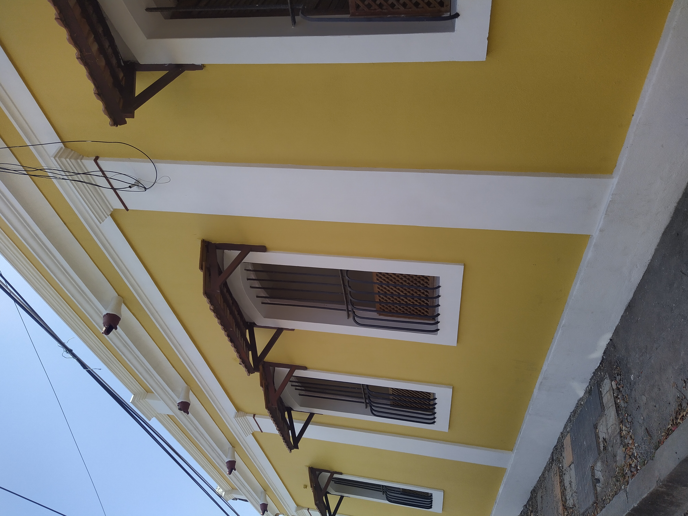
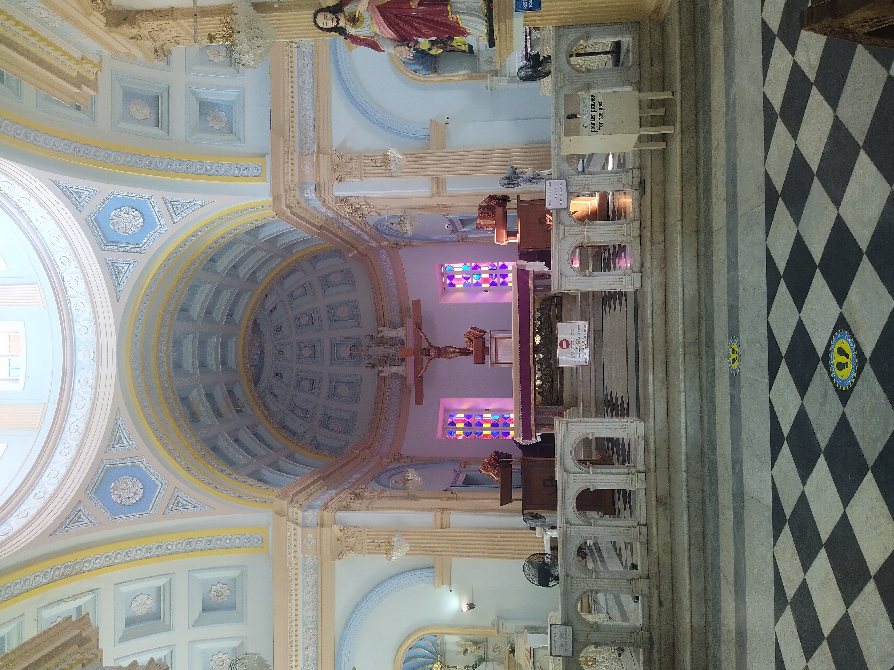
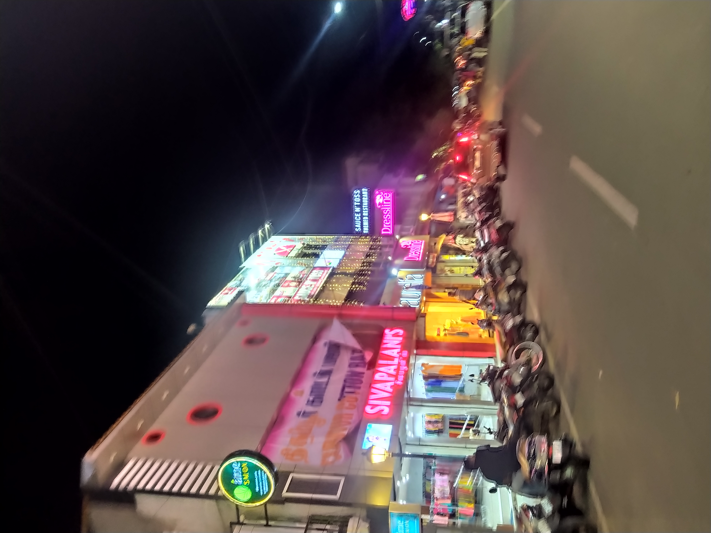

Beautiful Beaches
Pondicherry is home to some of the most beautiful beaches in India. Relax on the sandy shores and soak up the sun, or take a dip in the clear blue waters.
French Architecture
Pondicherry is a former French colony, and the city is still filled with beautiful examples of French architecture. Take a walking tour to explore the historic buildings and streets.
Delicious Food
Pondicherry is known for its delicious cuisine, which combines Indian and French flavors. Be sure to try some of the local specialties, like dosas, crepes, and seafood.
Spiritual Retreats
Pondicherry is home to several spiritual retreats and ashrams, where you can practice meditation and yoga. Take some time to connect with yourself and find inner peace.
Shopping
Pondicherry has a vibrant shopping scene, with markets, boutiques, and galleries selling everything from textiles to handicrafts. Don't forget to pick up some souvenirs!
Some Glimpses....